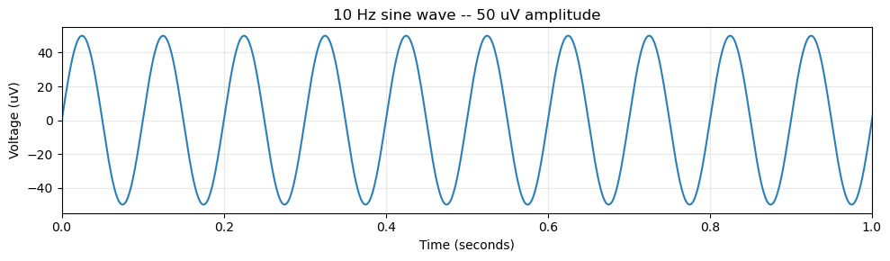
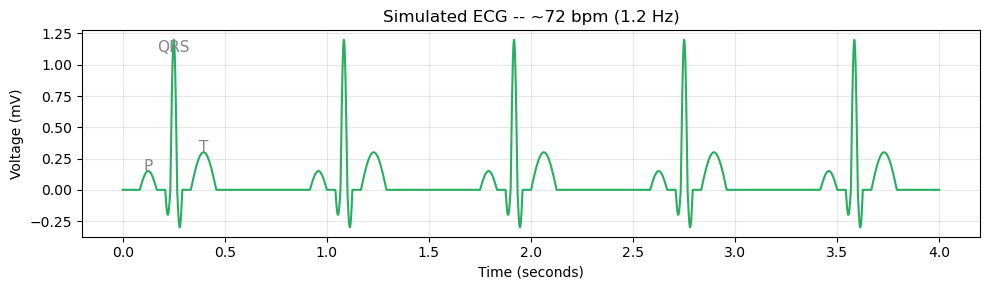
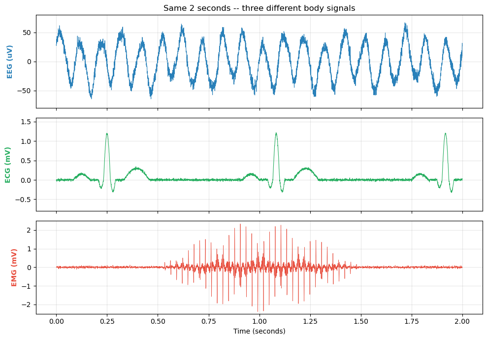

Module 1: Signals – What Electrical Signals from the Body Look Like
This tutorial walks through the concepts step by step. Each section includes an explanation, an example, and an exercise.
Step 1: Setup
Code
import numpy as npimport matplotlib.pyplot as plt%matplotlib inline# Make plots look niceplt.rcParams['figure.figsize'] = (10, 4)plt.rcParams['figure.dpi'] =100plt.rcParams['axes.grid'] =Trueplt.rcParams['grid.alpha'] =0.3print('Ready!')
Ready!
First, let’s import the libraries we’ll use throughout this notebook.
NumPy for numerical computation
Matplotlib for plotting
Exercise 1: Try it yourself!
Step 2: Clinical Vignette
Clinical scenario: A 28-year-old woman comes to your clinic with episodes of “staring off” lasting 10-15 seconds, happening several times a day. Her partner says she doesn’t respond during these episodes. You order an EEG. The technician hands you a tracing.
Can you tell what’s happening? By the end of this notebook, you’ll understand the building blocks of any electrical signal from the body – amplitude, frequency, and phase – and be able to read signals like this.
Every cell in your body produces tiny electrical signals. Neurons fire. Heart muscle contracts. Skeletal muscle twitches. A signal is just a measurement that changes over time. When we record an EEG, ECG, or EMG, we’re measuring voltage (in microvolts or millivolts) at each moment.
The simplest signal is a smooth, repeating wave with two key properties: - Amplitude: How tall the wave is. Bigger amplitude = stronger signal. - Frequency: How fast the wave repeats. Higher frequency = more cycles per second (Hz).
Exercise 2: Try it yourself!
Step 3: Generating a Sine Wave
A sine wave is the fundamental building block of all signals. Every physiological recording – EEG, ECG, EMG – can be decomposed into a sum of sine waves.
The formula: \(y(t) = A \sin(2\pi f t)\)
where \(A\) is the amplitude and \(f\) is the frequency in Hz.
Code
# Parametersfs =1000# Sampling rate (Hz) -- 1000 samples per secondduration =2.0# Duration in secondst = np.arange(0, duration, 1/fs) # Time vector# Generate a 10 Hz sine wave with amplitude 50 microvoltsfrequency =10# Hzamplitude =50# microvoltssignal = amplitude * np.sin(2* np.pi * frequency * t)# Plot itplt.figure(figsize=(10, 3))plt.plot(t, signal, color='#2980b9', linewidth=1.5)plt.xlabel('Time (seconds)')plt.ylabel('Voltage (uV)')plt.title(f'{frequency} Hz sine wave -- {amplitude} uV amplitude')plt.xlim(0, 1) # Show first secondplt.tight_layout()plt.show()

Exercise 3: Try it yourself!
Step 4: Clinical Presets: EEG Brain Rhythms
Different brain states produce characteristic frequencies:
Brain State
Frequency Band
Range
Typical Amplitude
Deep sleep
Delta
1-4 Hz
100-200 uV
Relaxed, eyes closed
Alpha
8-13 Hz
30-50 uV
Focused attention
Beta
13-30 Hz
10-20 uV
Active thinking
Gamma
>30 Hz
5-10 uV
Key pattern: Slower rhythms tend to be bigger; faster rhythms tend to be smaller. Slow rhythms reflect more neurons firing together (synchrony), which sums to a larger voltage at the scalp.
An ECG trace is more complex than a simple sine wave. Each heartbeat produces a characteristic pattern called the P-QRS-T complex:
P wave: Atrial depolarization (the atria contract)
QRS complex: Ventricular depolarization (the ventricles contract) – this is the tall spike
T wave: Ventricular repolarization (the ventricles reset)
Notice that the ECG is measured in millivolts – about 1000x larger than EEG.
Code
def generate_ecg(duration=4.0, heart_rate_hz=1.2, fs=1000):"""Generate a simplified but recognizable ECG waveform.""" t = np.arange(0, duration, 1/fs) y = np.zeros_like(t)for i, ti inenumerate(t): phase = (ti * heart_rate_hz) %1# Where in the cardiac cycle v =0# P waveif0.10< phase <0.20: v +=0.15* np.sin(np.pi * (phase -0.10) /0.10)# QRS complexif0.25< phase <0.28: v -=0.20* np.sin(np.pi * (phase -0.25) /0.03)if0.28< phase <0.32: v +=1.20* np.sin(np.pi * (phase -0.28) /0.04)if0.32< phase <0.35: v -=0.30* np.sin(np.pi * (phase -0.32) /0.03)# T waveif0.40< phase <0.55: v +=0.30* np.sin(np.pi * (phase -0.40) /0.15) y[i] = vreturn t, yt_ecg, y_ecg = generate_ecg()plt.figure(figsize=(10, 3))plt.plot(t_ecg, y_ecg, color='#27ae60', linewidth=1.5)plt.xlabel('Time (seconds)')plt.ylabel('Voltage (mV)')plt.title('Simulated ECG -- ~72 bpm (1.2 Hz)')# Label the first P-QRS-Tplt.annotate('P', xy=(0.125, 0.15), fontsize=11, color='#888', ha='center')plt.annotate('QRS', xy=(0.25, 1.1), fontsize=11, color='#888', ha='center')plt.annotate('T', xy=(0.395, 0.30), fontsize=11, color='#888', ha='center')plt.tight_layout()plt.show()

Exercise 5: Try it yourself!
Step 6: Side-by-Side Comparison: EEG vs ECG vs EMG
The same two properties – amplitude and frequency – describe signals from different parts of the body, but at very different scales:
Signal
Typical Amplitude
Typical Frequency
Source
EEG (brain)
10-100 uV
1-100 Hz
Cortical pyramidal neurons
ECG (heart)
0.5-3 mV
~1 Hz (60 bpm)
Cardiac muscle depolarization
EMG (muscle)
0.1-5 mV
20-500 Hz
Motor unit action potentials
The ECG is about 1,000x larger than the EEG. The EMG has much higher frequencies than either.
Code
np.random.seed(42)fs =2000t = np.arange(0, 2.0, 1/fs)# EEG: alpha-dominant with some theta and betaeeg = (40* np.sin(2*np.pi*10*t +0.3)+12* np.sin(2*np.pi*3.5*t +1.1)+6* np.sin(2*np.pi*21*t +0.7)+10* np.random.randn(len(t)) *0.5)# ECG: P-QRS-T waveform_, ecg = generate_ecg(duration=2.0, fs=fs)ecg +=0.015* np.random.randn(len(ecg))# EMG: bursts during contractionemg_envelope = np.where((t >0.5) & (t <1.5),1.5* np.sin(np.pi * (t -0.5) /1.0), 0.03)emg_fast =sum(np.sin(2*np.pi*(40+ k*35)*t + k*1.7) for k inrange(1, 9))emg = emg_envelope * emg_fast /5+0.03* np.random.randn(len(t))# Plot side by sidefig, axes = plt.subplots(3, 1, figsize=(10, 7), sharex=True)axes[0].plot(t, eeg, color='#2980b9', linewidth=0.8)axes[0].set_ylabel('EEG (uV)', color='#2980b9', fontweight='bold')axes[0].set_ylim(-80, 80)axes[0].set_title('Same 2 seconds -- three different body signals')axes[1].plot(t, ecg, color='#27ae60', linewidth=0.8)axes[1].set_ylabel('ECG (mV)', color='#27ae60', fontweight='bold')axes[1].set_ylim(-0.8, 1.6)axes[2].plot(t, emg, color='#e74c3c', linewidth=0.5)axes[2].set_ylabel('EMG (mV)', color='#e74c3c', fontweight='bold')axes[2].set_xlabel('Time (seconds)')axes[2].set_ylim(-2.5, 2.5)plt.tight_layout()plt.show()

Exercise 6: Try it yourself!
Step 7: Phase: Where in the Cycle
Besides amplitude and frequency, signals have a third property: phase.
Phase tells you where in the cycle the wave is at a given moment. Two signals can have the same frequency and amplitude but be offset from each other – like two runners on the same track, one slightly ahead.
Clinical relevance: Neurologists use phase reversal to pinpoint where a seizure starts. When one electrode’s signal flips relative to its neighbor, it marks the epileptic focus.
Now it’s your turn. Real EEG signals are mixtures of multiple frequencies. Create a signal that combines alpha (10 Hz) and beta (20 Hz) rhythms, then plot it.
Hint: Just add two sine waves together: signal = wave1 + wave2
Exercise 8: Try it yourself!
Code
# YOUR CODE HERE# Task: Create a signal that combines alpha (10 Hz, amplitude 30 uV)# and beta (20 Hz, amplitude 10 uV) rhythms. Plot it.## Steps:# 1. Create a time vector: t = np.arange(0, 2.0, 1/1000)# 2. Generate alpha: alpha = 30 * np.sin(2 * np.pi * 10 * t)# 3. Generate beta: beta = 10 * np.sin(2 * np.pi * 20 * t)# 4. Combine: combined = alpha + beta# 5. Plot with plt.plot(t, combined)
Step 9: Exercise: Phase Cancellation
What happens when you add two signals with the same frequency and amplitude but 180 degrees phase difference? This is called destructive interference and it’s fundamental to how noise cancellation works.
Exercise 9: Try it yourself!
Code
# YOUR CODE HERE# Task: Add two 10 Hz signals with the same amplitude but 180 deg phase offset.# What do you get? Plot both individual signals AND the sum.## Hint:# t = np.arange(0, 1.0, 1/1000)# signal_1 = 5 * np.sin(2 * np.pi * 10 * t)# signal_2 = 5 * np.sin(2 * np.pi * 10 * t + np.pi) # 180 deg = pi radians# combined = signal_1 + signal_2## Try plotting all three on the same axes.# What is the amplitude of the combined signal?